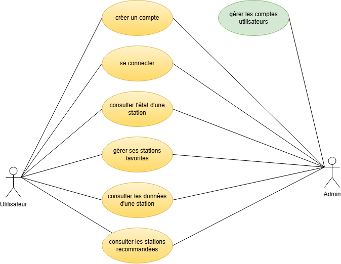
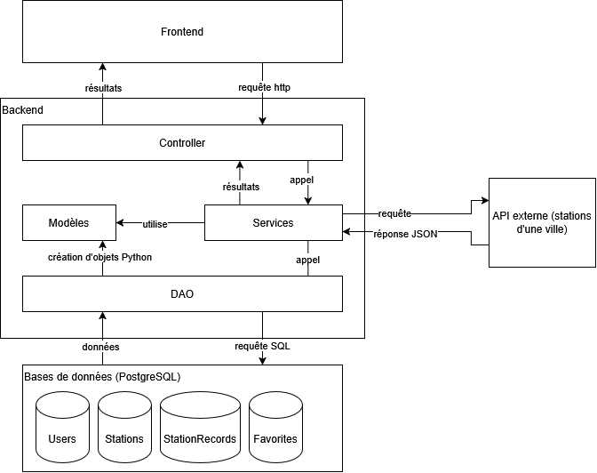
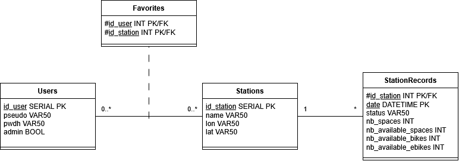
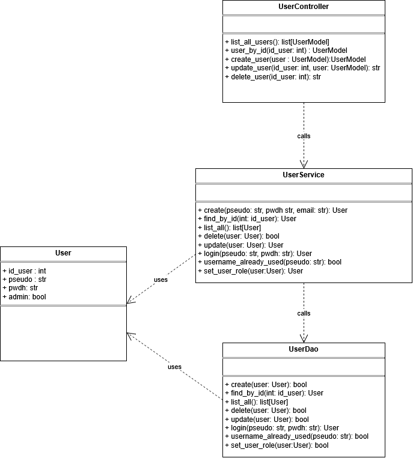
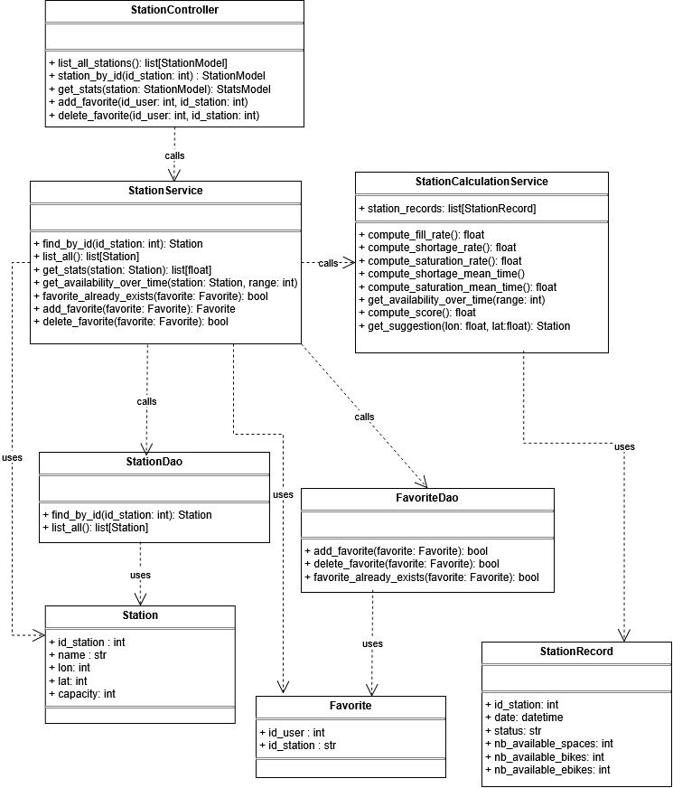
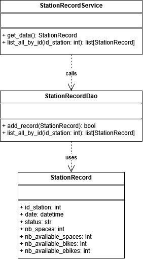
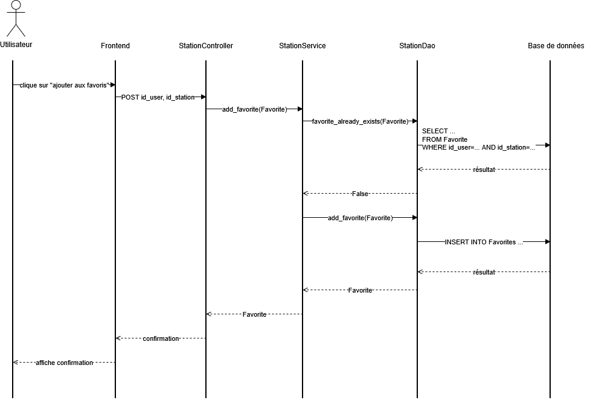
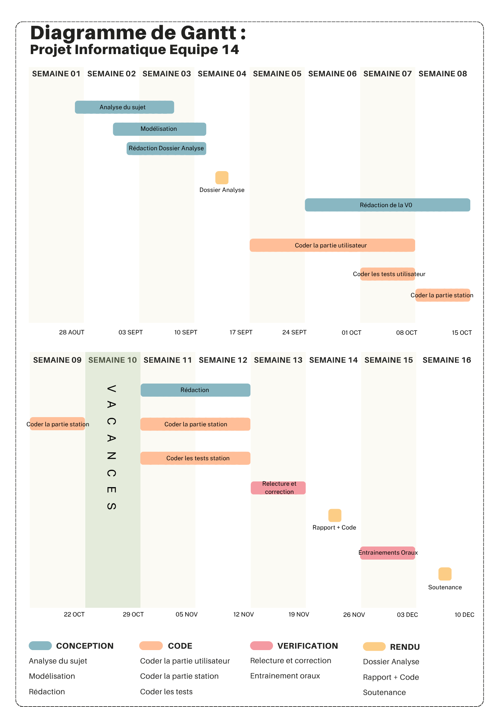

Introduction
Le développement des mobilités douces est un axe majeur face au dérèglement climatique. Parmi les moyens de transport les plus utilisés actuellement figure le vélo. Cependant, l’accès à son propre vélo peut être rendu difficile par différents facteurs socio-économiques (augmentation des prix face à une forte demande, vélos électriques peu abordables, difficulté de stockage d’un vélo personnel par manque de place, etc.). Pour pallier ces problèmes et développer des mobilités respectueuses de l’environnement, de nombreuses villes se dotent de vélos en libre-service, dont la gestion des stations est primordiale. Si de nombreuses applications existent déjà pour connaître l’état des stations de vélos en libre-service, elles sont sujettes à de nombreux points faibles. Par exemple, elles se contentent de fournir les disponibilités en vélos en temps réel et ne permettent pas de prévoir les disponibilités, même dans un futur proche. C’est pourquoi notre client souhaite développer une API qui irait bien plus loin. Celle-ci permettrait d’étudier les stocks des différentes stations au cours du temps, et ainsi de connaître l’état des stations de manière fine. Elle permettrait aux usagers de pouvoir anticiper leur déplacement via des indicateurs d’évolution temporels et des recommandations adaptées.
Cahier des charges
L’objectif du projet est de produire une API donnant des informations sur la disponibilité des vélos dans une ville. Au-delà de la seule disponibilité en temps réel par station, l’API doit également fournir des indicateurs temporels et un score de qualité.
Utilisateurs
Deux types d’utilisateurs sont à distinguer. Il y aura tout d’abord les utilisateurs «réguliers» de l’API, qui devront créer un compte puis se connecter pour accéder à l’API. Une fois connectés, ils pourront accéder aux données de l’API et gérer leurs stations favorites. Ensuite, il y a aura des comptes «administrateurs» qui pourront gérer les comptes utilisateurs.
Fonctionnalités de base attendues
Le cahier des charges prévoit un minimum de fonctionnalités attendues. La Figure 1 résume les actions que pourront effectuer les utilisateurs. Ces actions sont détaillées ci-dessous avec, pour chacune, la solution technique envisagée.

Collecter des données via une API externe
La collecte des données concernant la disponibilité et l’état des stations de vélos se fera via une API externe d’une ville. Ce genre d’API respecte le standard GBFS, c’est-à-dire qu’elles transmettent plusieurs fichiers JSON formatés permettant de connaître les stations et leurs disponibilités. Les fichiers qui nous intéresseront seront les fichiers station_information.json (donnant des informations sur les stations) et station_status.json (donnant des informations sur les disponibilités). Ces fichiers, qui seront collectés à intervalles de temps réguliers, permettront de nourrir une base de données. Cette dernière sera hébergée sur un service PostgreSQL et contiendra notamment une table pour les stations, et une pour les relevés (voir la Figure 4 pour plus de détails).
Consulter des données
Les utilisateurs pourront consulter diverses informations pour la station de leur choix. Ce choix se fera grâce à la liste des stations ou grâce à un système de stations favorites. Les données consultables seront de deux types. Premièrement, les données fournies par l’API (état de fonctionnement, disponibilité, etc.). Deuxièmement, des données calculées grâce à l’accumulation des données collectées (taux de remplissage, évolution de la disponibilité, fréquence et durée moyenne des épisodes de saturation et de pénurie).
Fournir un score de fiabilité
Pour chaque station, l’API devra calculer et fournir un score de fiabilité, traduisant sa capacité à répondre de manière constante aux besoins des usagers. Ces derniers doivent donc pouvoir emprunter un vélo (station non vide) et le rendre (station non saturée). Pour évaluer cette fiabilité de façon pertinente, on s’appuie sur l’historique des états de la station sur une période donnée. Ce score intègre deux dimensions principales : la fréquence d’indisponibilité, mesurée par le pourcentage de temps passé à l’état vide ou saturé, et la durée moyenne des épisodes de pénurie ou de saturation. L’idée est donc de sanctionner la durée des pannes tout autant que leur fréquence, pour que l’API puisse mettre en avant les stations réellement fiables au quotidien.
Pour traduire cette logique mathématiquement, nous prévoyons de construire un score sur 100 points. Cette échelle présente l’avantage d’être intuitive pour l’utilisateur lors de la recommandation de trajets. La formule sera établie par la suite, mais elle tiendra compte des variables suivantes :
- les pourcentages de temps passé vide (\(Pvide\)) et saturé (\(Psat\)),
- les durées moyennes des épisodes de saturation (\(Msat\)) et de pénurie (\(Mvide\)).
La formule prévue est de la forme suivante :
\(score = max(0, 100 - f(Pvide ; Psat ; Msat ; Mvide))\)
où \(f\) est une fonction croissante en chacune de ses variables que nous construirons ultérieurement durant la phase de développement du projet.
Recommander une station
L’API permettra de recommander des stations à proximité de l’utilisateur. Cette recommandation se basera à la fois sur la distance à l’utilisateur, sur l’historique de la station (notamment via le score de fiabilité) et sur son état actuel.
Modélisation
Architecture de l’application
L’API sera constituée de plusieurs couches afin de respecter le principe de séparations des responsabilités. L’architecture logicielle envisagée est présentée dans la Figure 3.

Frontend
Le frontend correspond à l’interface homme-machine. L’interface de l’API se voudra simple et fonctionnelle : elle se présentera sous la forme d’une page Web. Un menu à gauche permettra à l’utilisateur de sélectionner la fonctionnalité qu’il souhaite. Les différentes fonctionnalités disponibles porteront les noms suivants :
- rechercher une station,
- mes stations favorites,
- recommandation de station,
- gérer les comptes utilisateurs (n’apparaîtra que pour les administrateurs).
La gestion des stations favorites se fera de la manière suivante : l’utilisateur pourra ajouter de nouvelles stations lors de la consultation de la page d’une station. Il pourra ensuite consulter ses stations favorites ou les supprimer dans l’onglet «mes stations favorites».
Backend
Le frontend enverra des requêtes HTTP au backend, qui sera chargé de traiter ces requêtes et de renvoyer la réponse attendue. Ces requêtes concerneront soit la gestion des utilisateurs (création de compte par exemple), soit la gestion des stations de vélos (consultation de la page d’une station par exemple). Le backend sera séparé en plusieurs couches.
Tout d’abord, une couche controller recevra les requêtes fournies par le frontend lors de l’utilisation de l’API par un usager. Cette couche aura pour but de convertir et transférer ces requêtes à la couche suivante, celle des services.
La couche service est le cœur de l’application, c’est dans cette couche que seront regroupées les fonctions apportant une valeur ajoutée. Il s’agira par exemple des fonctions permettant de calculer les indicateurs souhaités et le score de fiabilité pour chaque station de vélos. Pour cela, la couche service a besoin de données. Ces services feront donc appel à une couche DAO (Data Access Object) afin de communiquer avec les bases de données.
La couche DAO recevra les demandes de données de la part de la couche service. Elle sera chargée de convertir ces demandes en requêtes SQL. Ces requêtes seront alors traitées par la couche persistante : celle des bases de données. La couche DAO aura alors pour mission de convertir les données renvoyées par les bases de données en objets Python (par exemple en objet User ou Station, voir la section Classes pour plus de détails). Ces objets seront ensuite utilisés par la couche service afin de calculer les indicateurs. Les résultats obtenus seront transmis à la couche controller puis au frontend pour affichage à l’utilisateur.
Couche persistante
La couche persistante sera constituée de bases de données PostgreSQL qu’utilisera notre API. Le modèle et les tables de données sont présentés dans la section suivante.
Modèle de données
Afin que le modèle de données soit cohérent et pérenne, nous veillerons à respecter les trois premières formes normales. Le modèle de données retenu est résumé en Figure 4. Les raisons ayant amené à ce choix sont expliquées ci-dessous.

Concernant les utilisateurs, une table Users sera nécessaire. Elle contiendra les données des utilisateurs : identifiant, pseudonyme de l’utilisateur, mot de passe hashé, rôle (utilisateur ou administrateur).
Pour les stations, les données à stocker sont les suivantes : identifiant et nom de la station, coordonnées géographiques, état de la station, nombre d’emplacements, nombre d’emplacements libres, nombre de vélos disponibles (potentiellement électriques), date (avec heure). Le stockage des données au cours du temps nécessite d’être attentif aux formes normales. En effet, un stockage naïf des relevés dans une seule table nécessiterait une clé composite (id_station, date). Cela créerait plusieurs problèmes :
- l’attribut name_station serait en dépendance fonctionnelle avec id_station et donc avec seulement une partie de la clé primaire (contradiction avec le principe de la deuxième forme normale) ;
- les attributs de coordonnées géographiques lon et lat seraient en dépendance fonctionnelle avec name_station (contradiction avec le principe de la troisième forme normale).
Pour respecter les trois formes normales, le projet nécessite donc deux tables. La première sera la relation Stations. Ses attributs stockeront les données concernant les stations elles-mêmes : l’identifiant de la station (clé primaire), son nom, ses coordonnées géographiques, le nombre d’emplacement (attribut capacity). La seconde sera la relation StationRecords, qui stockera les données de disponibilités des stations. Ses attributs seront les suivants : l’identifiant de la station (attribut id_station), date et heure de l’enregistrement (date), l’état de fonctionnement (status), le nombre d’emplacements libres de la station (nb_available_spaces), le nombre de vélos disponibles (nb_available_bikes) et le nombre de vélos électriques disponibles(nb_available_ebikes).
Enfin, l’un des attendus du projet est de permettre aux utilisateurs de pouvoir gérer leurs stations favorites. Cela se fera via une table d’association Favorites qui permettra de lier un utilisateur à ses stations favorites.
Classes
Généralités
L’architecture logicielle présentée en Figure 3 nécessite l’implémentation de nombreuses classes Python. Tout d’abord, il faudra implémenter les classes modèles User, Station, StationRecord et Favorite qui modéliseront respectivement un utilisateur, une station, un enregistrement de station à une date précise et la liaison entre un utilisateur et ses stations favorites. Chacune de ces classes nécessitera sa propre classe DAO afin de pouvoir faire la liaison entre ces objets et les tables de données correspondantes. Il faudra également implémenter des classes controller permettant de gérer les différents endpoints de l’API. Enfin, chacune des quatre classes métiers prévues aura une classe de services associée. Elles traiteront les objets Python correspondant.
Remarque : Afin de ne pas surcharger les diagrammes ci-dessous inutilement, ne figureront pas :
- les classes schémas de type BaseModel, utilisées par les controllers et qui permettront de faire la traduction entre les objets Python et les informations au format JSON envoyées ou reçues par le frontend;
- les méthodes spéciales (du type __str__, etc.) qui pourraient être nécessaires.
Classes liées aux utilisateurs
Les classes liées aux utilisateurs permettront essentiellement de créer les utilisateurs et de gérer leur rôle (utilisateur ou administrateur). La classe modèle est la classe User. Les autres classes seront essentiellement fonctionnelles et permettront de gérer la connexion et la base de données. Les autorisations pour les comptes administrateurs se feront au niveau de la classe UserController à l’aide de tokens. Le diagramme de classes prévu pour les utilisateurs est présenté en Figure 5.

Classes liées aux stations
Trois classes modèles liées aux stations sont prévues. Tout d’abord, la classe Station modélisera une station et ses attributs stockeront les informations d’une station. Ensuite, la classe Favorite modélisera le lien entre un utilisateur et le fait qu’une station figure parmi ses favorites. Enfin, une classe StationRecord modélisera l’état d’une station à une heure précise, et ses attributs seront les informations fournies par l’API externe de la ville.
Chacune des trois classes métiers prévues possédera une classe DAO, une classe de services et une classe controller (exceptée la classe StationRecord, car l’appel à l’API externe se fera via la méthode get_data de la classe StationRecordService). De plus, afin de séparer la logique métier et les calculs des indicateurs statistiques, le choix a été fait de créer une autre classe service : la classe StationCalculationService. Une instance de cette classe sera crée dans la méthode get_stats de la classe StationService. Lors de la construction de cet objet StationCalculationService, un attribut station_records sera créé et contiendra tous les enregistrements liés à une station qui seront nécessaires aux méthodes de calcul de la classe. Ces méthodes de calcul permettront de retourner les indicateurs souhaités par le cahier des charges. Pour rappel, les indicateurs attendus sont les suivants : taux de remplissage, disponibilité au cours du temps, pourcentage du temps passé vide ou saturé, temps moyen des épisodes de saturation et de pénurie, score de fiabilité. Une méthode get_availability_over_time est prévue, afin de déterminer l’évolution de la disponibilité de la station au cours du temps. Selon le développement et les possibilités, elle retournera des graphiques (à l’aide de la bibliothèque matplotlib) ou des tableaux de données.
Le diagramme de classes prévu pour les stations est présenté en Figure 6 et Figure 7.


Description des endpoints
Les tableaux suivants décrivent les différents endpoints prévus de l’API.
Comptes et authentification
| Chemin | Méthode | Entrée | Sortie (succès) | Description |
|---|---|---|---|---|
/create_user |
POST | username, password, email |
User |
Crée un compte |
/login |
POST | username, password |
jeton d’accès | Authentifie et renvoie un jeton |
/users |
GET | - | liste[User] |
Liste les comptes |
/users/{id_user} |
PATCH | username et/ou password |
User |
Modifie un compte |
/users/{id_user} |
DELETE | - | - | Supprime un compte |
Remarques :
- les trois derniers endpoints du tableau précédent ne seront accessibles qu’aux comptes administrateurs ;
- chaque traitement renverra également un code HTTP au client afin de l’informer de l’état de sa requête (par exemple, le code 201 pour la création d’un utilisateur pour signifier que l’utilisateur a bien été créé).
Stations
| Chemin | Méthode | Entrée | Sortie (succès) | Description |
|---|---|---|---|---|
/stations |
GET | - | liste[Station] |
Liste les stations |
/stations/{id_station} |
GET | - | Station |
État actuel d’une station + indicateurs statistiques + score |
/stations/{id_station}/history |
GET | période (24h/7j/30j) | liste[Releve] |
Évolution de la disponibilité |
/suggestions |
GET | position géographique | liste[Station] |
Stations recommandées en fonction des critères |
Gestion des stations favorites
| Chemin | Méthode | Entrée | Sortie (succès) | Description |
|---|---|---|---|---|
/favorites |
GET | - | liste[Station] |
Favoris de l’utilisateur courant |
/favorites/{station_id} |
PUT | - | - | Ajoute une station aux favoris |
/favorites/{station_id} |
DELETE | - | - | Retire une station des favoris |
Diagramme de séquence d’une fonctionnalité
À ce stade, nous avons une vue d’ensemble du fonctionnement de l’application. Nous pouvons résumer ce qui a été vu précédemment grâce à un diagramme de séquence. Pour l’exemple, la Figure 8 présente le diagramme de séquence de la fonctionnalité «ajouter une station favorite» lorsque la station n’est pas déjà en favori.

Organisation du projet
Calendrier prévisionnel
Le calendrier prévu est donnée par le diagramme de Gantt en Figure 9.

Outils de développement
Le projet sera réalisé en Python. Durant la phase de développement, nous utiliserons plusieurs outils et bibliothèques fournis pour ce langage. Voici le détail de ces outils pour chaque couche :
- le framework streamlit pour le frontend,
- le framework FastAPI pour le backend,
- la bibliothèque psycopg2 pour la couche DAO (afin de convertir les instructions Python en requêtes lisibles par les tables PostgreSQL),
- la bibliothèque pydantic pour les classes schéma.
De plus, afin de garantir une maintenance aisée, nous tenterons de respecter les bonnes pratiques de programmation. Ainsi, le code sera rédigé en anglais. De plus, nous serons amenés à utiliser les outils suivants :
- Ruff pour le formatage du code,
- Pytest afin d’effectuer les tests unitaires,
- Github pour héberger et versionner notre projet.